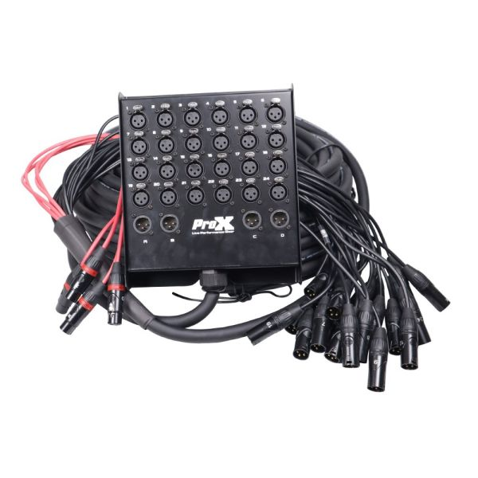

Monday's reading walked the console section by section: channel strip, in-line architecture, submasters, master. Today you watch it work. The pedagogical move is to take the same band, with the same instruments and the same set of mics, and run them through the console twice: once for a live show in a small venue, once for a studio recording session. The hardware doesn't change between the two; only what's plugged into the inputs and where the outputs go.
Nothing to take from gear storage today. This session runs at your station with the projector at the front of the room. Open the Mixer reading (Lecture 3) in another tab; you'll be referring back to its photos and diagrams as we walk the two scenarios.
The Sound Below is a five-piece. The instrumentation was chosen to exercise every signal type, mic kind, and cable you've met in this module: a mic-level vocal, a mic-level guitar amp, the canonical DI-dry-plus-amp-wet bass treatment from Lecture 2, the standard four-mic drum setup (kick, snare, and a stereo pair of overhead condensers), and a stage keyboardist with a laptop running alongside (the only line-level signals in the band). Twelve signals total. The console has sixteen input channels; the band fills three-quarters of it.
| Player | What's being captured | Source type | Signal type | Cable |
|---|---|---|---|---|
| Vocalist | Voice into a handheld mic | Dynamic mic | Mic level | XLR |
| Guitarist | Mic on the guitar amp's speaker | Dynamic mic | Mic level | XLR |
| Bassist (dry) | Bass guitar through a DI box, direct out | DI box | Mic level (balanced) | XLR |
| Bassist (wet) | Mic on the bass amp's speaker | Dynamic mic | Mic level | XLR |
| Drummer | Kick drum | Dynamic mic | Mic level | XLR |
| Drummer | Snare drum | Dynamic mic | Mic level | XLR |
| Drummer | Overhead, left (cymbals + kit) | Condenser mic (+48V) | Mic level | XLR |
| Drummer | Overhead, right (cymbals + kit) | Condenser mic (+48V) | Mic level | XLR |
| Keyboardist | Stage keyboard, left output | Synth / keyboard output | Line level | 1/4" TRS |
| Keyboardist | Stage keyboard, right output | Synth / keyboard output | Line level | 1/4" TRS |
| Keyboardist | Laptop, left output (Ableton) | Laptop audio interface | Line level | 1/4" TRS |
| Keyboardist | Laptop, right output (Ableton) | Laptop audio interface | Line level | 1/4" TRS |
Bass is the one source on the band today that gets recorded two ways at once. The bassist's signal hits a DI box first: the box's direct out sends a clean, balanced copy straight to the console (the "dry" signal), and the box's thru jack passes the instrument signal along to the bass amp, where a dynamic mic on the cab captures the amp's tone (the "wet" signal). Two channels, two mic-level XLRs into the console, both arriving at the same moment. At mixdown the engineer blends them: the DI carries the low-end punch and the note attack; the mic'd amp carries the warmth, the room, the speaker's character. Going DI-only often sounds sterile; going amp-only often sounds muddy; blending the two is the standard solution.
The keyboardist's four signals are the first non-microphone sources on the band today, and the first line-level signals in the lab. The stage keyboard puts out a stereo pair from its main outputs (L and R, 1/4" TRS, line level); the laptop puts out a second stereo pair from its audio interface (also L and R, 1/4" TRS, line level). Four line-level signals at the source.
Line-level signals are already strong enough to pass through a console's circuitry without needing a preamp's amplification: the preamp's job is to boost weak mic-level signals up to the level the rest of the console expects, and sending a line-level signal into a mic preamp without precaution can over-amplify it and clip. How a line-level source is handled on the way to the console depends on the scenario: live sound and studio recording solve it in different ways, both covered in the scenarios below.
The Sound Below is playing a small venue. The stage holds the band, the amps, the drums, the keys rig, and five monitor wedges (one in front of each performer). Out in front of the stage are the front-of-house speakers facing the audience. Halfway back in the room sits the engineer, behind the console.
The job: take the twelve signals coming off the stage and send them to two destinations at once.
Sketched at the level of inputs and outputs, the scenario looks like this. The band's twelve signals arrive on the left in two cable families: eight mic-level signals on XLR (vocal, guitar amp, bass DI, bass amp, four drum mics) and four line-level signals on TRS from the keyboardist (keys L/R, laptop L/R). All twelve land at the same console. From that console, two output mixes go to two destinations: the front-of-house speakers facing the audience, and the five stage wedges facing the performers.
Behind the console, halfway back in the room, is the engineer. Their job for the night is to ride the faders: listen continuously to what's coming out of the FOH speakers, keep the band balanced as the song moves (vocal up in the chorus, guitar back during the verse, kick steady through it all), and at the same time keep the five wedge mixes balanced for each player on stage. The engineer is making small fader moves and EQ adjustments constantly through the show; the work happens in real time and is finished when the band walks off.
Before any of that routing happens, the twelve signals have to physically travel from the stage to the console. Venues solve this with two pieces of dedicated hardware: a stage box and a snake.
At the side of the stage, sitting on the floor or bolted to a riser, is a sturdy metal box about the size of a thick laptop. Its top face is a grid of jacks: a row of female XLR inputs, labeled 1, 2, 3, ... up to the number of channels on the box. This is the stage box. Every mic on the stage plugs into one of its jacks with a short XLR cable. The vocalist's mic on a short run; the kick drum's mic on a short run; each overhead condenser on a short run. The longest cable on the stage at this point is the one from the drum overhead to the stage box, maybe ten feet.
From the back of the stage box, one fat black cable runs off the stage, along the wall or under the floor, all the way to the console at front-of-house. This cable is the snake (sometimes a multicore, or in audio-engineer slang the multi). Inside its outer jacket are dozens of individually shielded balanced pairs: one pair per channel of the stage box, often plus a few return pairs going back the other way for monitor speakers on the stage. A 16-channel snake carries 16 signals on a single physical cable; a 32-channel snake carries 32. At the console end, the snake terminates in a fan-out: a bundle of individual XLR connectors, labeled 1 through N, that plug into the back of the console.

The stage box jack number becomes the console channel number. Vocalist's mic plugged into stage box jack 1 lands on console channel 1. Kick mic plugged into jack 5 lands on console channel 5. The engineer working at the console knows which physical mic is on which channel because the stage box and the console agree on the numbering. Re-patch the mic into a different jack and the source moves to a different console channel; the engineer at FOH has to re-label the fader.
That works cleanly for every input on the band today except the keyboardist's. The stage box has female XLR jacks; the keyboard and the laptop have 1/4" TRS line outputs. The connectors don't match, and even if they did, the signal coming out of the keys rig is line-level, while a stage box is designed for the mic-level signals that show up on every other channel. Both problems get solved by the same piece of gear: a DI box, the same kind that handled the bass guitar back in Lecture 2.
The keyboardist places one DI box at her station with four inputs and four outputs. Her stage keyboard's L and R outputs go into two of the DI's 1/4" TRS inputs; the laptop's L and R outputs go into the other two. On the DI box's front face, a pad switch for each channel is engaged: this tells the DI that the incoming signal is line-level (hot) rather than instrument-level, and pads the input down so the DI's internal circuit doesn't clip. Four XLR cables come out of the DI box's outputs, carrying four mic-level signals to four jacks on the stage box. From the snake's point of view, the keyboardist's four channels look exactly like the eight mic channels: balanced, mic-level, on XLR. The engineer at FOH treats them as four more mic inputs with their preamps set a touch lower than for an actual mic.
The DI-box route is the most reliable and the most uniform (every channel arrives at the console as XLR-on-MIC, no exceptions). There are two simpler alternatives, used when the situation allows.
First: a TRS-to-XLR cable. The signal stays balanced and line-level (TRS and XLR can both carry a balanced signal; a properly wired adapter cable just remaps the conductors), and the keys arrive at the stage box on the XLR jack at line-level instead of mic-level. The console's preamp on that channel gets set much lower than for a mic, because the signal is already strong. Works on most consoles, since the MIC jack will accept up to about +4 dBu, but the engineer has to remember to set the gain differently for the keys channels.
Second: many stage boxes (and the consoles they feed into) have a separate row of 1/4" TRS line-level inputs alongside the XLR row, specifically for keys, DI'd guitars, and other line-level sources. When the stage box has these, the keys plug straight in with regular TRS cables and arrive at the console on the LINE jack at line-level. The simplest setup of all, when the venue's stage box happens to have the right inputs. The ProX in the photo above does not; many touring rigs do.
The picture above describes an analog snake: one shielded pair per audio channel, lots of copper, heavy. A modern variant is the digital snake: a small box at the stage that does analog-to-digital conversion locally, and sends all the channels as a single digital stream over an ethernet cable (or a fiber-optic cable) to the console. The same Cat6 cable that runs your laptop's internet can carry 32 channels of audio at 48 kHz. The connectors are different and the box at the stage is doing more work, but conceptually it's the same idea: bundle many signals onto one path. Many touring engineers prefer digital snakes for the weight savings; many older venues still use analog snakes because they already own one and they last forever.
The twelve signals get assigned to input channels 1 through 12 on the console. Channels 13 through 16 sit empty for the live show.
| Channel | Source | Rear-panel jack | Phantom power (+48V) |
|---|---|---|---|
| Ch 1 | Vocal | MIC (XLR) | off |
| Ch 2 | Guitar amp mic | MIC (XLR) | off |
| Ch 3 | Bass DI | MIC (XLR) | off |
| Ch 4 | Bass amp mic | MIC (XLR) | off |
| Ch 5 | Kick | MIC (XLR) | off |
| Ch 6 | Snare | MIC (XLR) | off |
| Ch 7 | Overhead L | MIC (XLR) | on |
| Ch 8 | Overhead R | MIC (XLR) | on |
| Ch 9 | Keys L (DI'd from line) | MIC (XLR) | off |
| Ch 10 | Keys R (DI'd from line) | MIC (XLR) | off |
| Ch 11 | Laptop L (DI'd from line) | MIC (XLR) | off |
| Ch 12 | Laptop R (DI'd from line) | MIC (XLR) | off |
All twelve signals arrive at the console on the MIC (XLR) jack: the eight mic-level signals from microphones and the DI box on the bass, plus the keyboardist's four signals after her DI box. Only the two overhead condensers need phantom power; the dynamics and the DI boxes don't draw +48V. (If you're unsure why, the polar-patterns and condenser-mic sections of Lecture 2 cover it.)
Each channel's L-R button sends that channel to the master stereo bus. The channel pan knob places it left or right; the channel fader sets its level in the mix; the channel EQ shapes its tone. The engineer rides faders, makes EQ moves, and uses the master fader to set the overall level coming out of the FOH speakers.
For drums, the standard move is the one the reading walked through: route the four drum channels (5, 6, 7, 8) to subgroup pair 1-2 instead of straight to L-R. Pan the kick and snare center; pan overhead L hard left and overhead R hard right. Then route subs 1 and 2 to the L-R master with their own pair of faders. Now the engineer has one pair of submaster faders that controls the whole drum kit's level in the FOH mix, without touching the individual drum-mic balance. If the drums need to come down 3 dB during a quiet verse, two faders move; the kit's internal balance stays exactly where it was.
The same logic applies to the keyboardist's four channels. Route the keys L/R and laptop L/R (channels 9 through 12) to subgroup pair 3-4. Pan each L channel hard left and each R channel hard right; the two stereo pairs sum across the subgroup pair into one stereo electronic submix. Subs 3 and 4 then route to L-R with their own fader pair. One pair of faders controls everything coming from the keys rig in the FOH mix, and the internal balance between the stage keyboard and the laptop stays set wherever the keyboardist's gain-staging put it.
The five performers each need a different blend in their wedge. The aux sends are how that gets built. Each aux is its own bus, with its own master level, going out the back of the console to a separate output. Send that output to a wedge amplifier, and the aux's bus becomes that performer's monitor mix.
For monitor wedges, every aux used for a wedge mix is set pre-fader. The reason: the FOH engineer might pull the vocal fader down between songs (chatter, a quiet intro, anything), and the singer still needs to hear their own voice in the wedge at the same level. Pre-fader means the aux send level is independent of the channel fader; whatever the engineer does at FOH doesn't bleed into the stage mix.
The console has six aux sends per channel. Five performers take five auxes (1 through 5) for their wedges. That leaves Aux 6 for a single shared FX send to the outboard reverb unit; the delay drops out of this evening's setup. A larger console with more auxes wouldn't force the trade-off, but on the Toft, with five wedges to feed, the engineer chooses what matters most for the show.
| Aux | Destination | Pre / Post | What's turned up on this aux |
|---|---|---|---|
| Aux 1 | Vocalist's wedge | Pre | Vocal (loud) · kick (low) · everything else minimal |
| Aux 2 | Guitarist's wedge | Pre | Vocal · guitar · kick · snare |
| Aux 3 | Bassist's wedge | Pre | Bass DI · kick · snare · vocal (low) |
| Aux 4 | Drummer's wedge | Pre | Bass DI · vocal · click (if applicable) |
| Aux 5 | Keyboardist's wedge | Pre | Keys · laptop · vocal · kick · snare |
| Aux 6 | Reverb send (to outboard reverb unit) | Post | Vocal mainly; touch of snare |
Aux 6 is doing a different job from the five wedges: it feeds an outboard reverb unit instead of a monitor speaker. It runs post-fader because the wet effect should follow the dry signal in the FOH mix. If the vocal fader comes down during a quiet section, the reverb on the vocal should come down with it; setting Aux 6 post-fader makes that happen automatically. The reverb return comes back into a spare submaster strip on the FX returns section (where the reading covered the stereo effects returns), where it gets blended into the L-R master alongside the dry signals.
The vocalist's mic on Ch 1 ends up in seven places at once during a live show: the L-R master (audience hears it), the vocal wedge (singer hears it), the four other wedges (everyone else hears it in their stage mixes), and the reverb send (so vocals carry a tail). Seven destinations, one mic, one channel strip. The aux sends are what make that possible; the river-with-taps diagram from Monday's reading is exactly this picture at work.
Same band, same twelve signals, same console, very different goal. The band is now in a studio's live room; the engineer is in the control room behind the glass; the audience is gone. The output isn't a real-time mix for someone listening tonight. It's a multitrack recording: each instrument captured on its own track in Pro Tools, to be edited and mixed later in front of the screen, days or weeks after the band has gone home.
The reality of studio work, almost everywhere, is that the band does not play together all at once. Studio recording proceeds by tracking: one source or one section at a time, layering the recording in passes. The typical order is rhythm section first (drums, then bass), then the harmonic and rhythmic layers (guitar, then keys), and finally vocals on top. The drummer plays to a click track in headphones; the bassist plays to the drum recording; the guitarist plays to drums and bass; the keyboardist plays to drums and bass and guitar; the vocalist sings to the full instrumental band. Each player performs in dialogue with whatever was captured on the previous days. By the end, the band has made an arrangement together that they never played together in the room.
The reasons are practical and artistic. Practically: isolating one source at a time means no bleed (a kick mic picks up only the kick, not also the bassist's amp through the open door). Artistically: the band can take many takes of each part without anyone else getting tired, edit between takes, fix what doesn't work, and use the studio as a composition tool. The studio session is less like a performance and more like a slow, patient assembly.
This re-shapes everything about how the console gets used. The L-R master still feeds the control-room monitors (the engineer needs to hear what's being captured plus what's playing back). Each tracking pass only uses the channels for the source being recorded that day; the rest of the channels carry previous days' takes coming back from Pro Tools. The wedge-mix-per-performer picture from Scenario 1 collapses to a single cue mix for whoever is in the live room. And the I/P REV button, instead of being a once-at-the-end move, becomes part of the daily routine.
Studios solve the source-to-console problem differently from live venues, because a studio is built for repeated use across many different sessions and needs more flexibility than a touring band's stage box. Our studio (MB2508) actually has two parallel chains from the live room to the Toft: one for the mic-level sources (vocals, guitar amp, bass, drums) and a shorter one for the keyboardist's line-level sources. The mic-level chain is walked first, in four stages.
In Monday's reading, the channel strip's INPUT GAIN knob was the place where the preamp lived: a red knob at the top of each strip, setting how much amplification the mic-level signal received before passing through the rest of the channel. That description fits any console where the preamp is on board.
In our studio, the preamp has been moved outside the console. The ISA 828 and the Octopre do the mic-level-to-line-level boost before the signal ever reaches the Toft. By the time a channel sees the signal, the gain has already been set on the external preamp's front panel; the Toft's INPUT GAIN knob becomes a secondary trim (typically left at unity, or used for fine adjustment), and the LINE button at the top of the strip is engaged so the channel listens to the LINE jack on the back instead of the MIC jack.
Why bother moving the preamp out? Two reasons. The first is sound: external preamps like the ISA 828 are designed and built to a higher specification than the preamps inside a project-studio console; they impart a particular character that's part of the studio's sonic signature. The second is flexibility: with the preamp separate from the console, the engineer can choose a different preamp per source per session (one preamp for vocals, another for drums, a third borrowed from a friend just for this take), without being locked into whatever the console happened to ship with.
The two preamps in MB2508 don't sound the same. The Focusrite ISA 828 ("the good one") is a transformer-coupled design, clean and detailed, with a warmth on transient material that engineers reach for on lead vocals and intimate sources. The Octopre Platinum ("the cheaper one") is solid-state, more workmanlike, perfectly usable on louder sources where the preamp's character is less audible against the source's own loudness.
Because the patch panel's odd jacks are hard-wired to the ISA and the even jacks are hard-wired to the Octopre, which jack you plug a mic into is a decision about how that mic will sound on the recording. The engineer doesn't have a "preamp select" switch; the choice gets made by which jack the cable goes into. The conventional move is to send the most exposed, most-listened-to sources through the ISA (vocals first, then stereo pairs, then any solo instrument the song depends on) and route the loud workhorse sources through the Octopre (kick drum, guitar amp, anything in a busy mix).
On a tracking day, the engineer has eight patch panel jacks to allocate. With only four mics active (drums), or two (bass DI + bass amp), or one (vocals), the eight jacks are more than enough. The constraint is real only when many mics need to be on at once, and even then the engineer can swap patches mid-session.
The chain above describes how the eight mic-level signals get from the live room to the Toft. The keyboardist's four signals don't follow it. They're line-level at the source, so they don't need the patch panel or the external preamps; sending them through that chain would just add unnecessary conversion stages and waste two preamp inputs on a signal that's already at the right level.
Instead, the keyboardist's outputs go to a small two-channel audio interface that lives in the control room, not in the live room. The two interface inputs accept her 1/4" TRS line-level signals directly; the interface's two analog outputs are wired into Toft channels 15 and 16 on the LINE jacks at the back of the console. From the Toft's point of view, two channels on the right end of the desk are reserved for the keyboardist, permanently fed from this interface.
Two interface inputs and four line-level sources looks like a mismatch, and it would be if the band were playing together. With the studio's tracking workflow it isn't: the keyboardist tracks her stage keyboard on one day and her laptop on another, never both at the same time. On keys day, her two keyboard outputs (L and R) cable into the interface; Pro Tools records two tracks (Ch 15 and Ch 16). On laptop day, those same two interface inputs receive the laptop's two outputs instead; Pro Tools records two more tracks (again Ch 15 and Ch 16, but a different take and a different source). Across the two days, four discrete tracks land in the session even though the chain has only two channels at any moment.
Across the full MB2508 setup, the band's twelve signals reach Pro Tools by two completely separate paths. The eight mic-level signals take the long path: patch panel in the live room, into the rack-mounted preamps, through the wall to the Toft's LINE inputs at channels 1 through 8 (the channel-to-source mapping shifting each tracking day with the preamp allocation). The keyboardist's four signals take the short path: straight to the interface in the control room, into the Toft's LINE inputs at channels 15 and 16 (permanently). The two chains never share a piece of gear past the source.
Why two chains? The mic-level signals need preamps (to lift them up to line-level) and benefit from being shaped by the external preamps' character; the line-level signals need neither. Forcing them all through the same chain would help nothing and would cost two preamp inputs per session on signals that don't want preamping. The studio uses the right tool for each kind of source.
The studio channel map is shaped by the two chains. Channels 1 through 8 carry the mic-level signals coming back from the rack, but which source lands on which channel is a per-session decision, made by which patch-panel jack the engineer plugs each mic into (which in turn decides which preamp it passes through). Channels 15 and 16 carry the keyboardist's stereo pair from the control-room interface, permanently. Channels 9 through 14 sit empty, and the MON returns on all twelve active channels carry Pro Tools playback for monitoring.
| Channel | Source | Rear-panel jack |
|---|---|---|
| Ch 1-8 | Mic-level sources, allocation set per tracking day by patch-panel jack (odds → ISA 828, evens → Octopre) | LINE (1/4" TRS, from preamps) |
| Ch 9-14 | Empty | – |
| Ch 15 | Keyboardist's L output (stage keyboard or laptop, depending on tracking day) | LINE (1/4" TRS, from control-room interface) |
| Ch 16 | Keyboardist's R output (stage keyboard or laptop, depending on tracking day) | LINE (1/4" TRS, from control-room interface) |
In Scenario 1 the channel map was fixed: Ch 1 always meant vocal, Ch 5 always meant kick, and so on. In the studio the mapping for Ch 1-8 is more fluid because each tracking day uses a different subset of the patch panel jacks, and the engineer chooses which patch panel jack each mic goes into based on which preamp the source should pass through. A snare mic patched into jack 3 (one of the ISA 828's inputs) ends up on a different Toft channel than the same snare mic patched into jack 4 (one of the Octopre's inputs). The Toft channel number is downstream of the patch panel decision.
On drums day, four mics fill four jacks; on bass day, two mics fill two; on vocal day, one mic fills one. The previous day's takes don't take up patch panel jacks at all (they play back from Pro Tools into the Toft's MON jacks, not the LINE jacks). Channels that aren't taking a fresh input that day are dedicated to monitoring the playback.
Channels 15 and 16 are the exception to the flexibility: they're permanently reserved for the two-channel interface that feeds the keyboardist's signals from the control room. On keys day, those two channels carry the stage keyboard; on laptop day, those same two channels carry the laptop. The interface stays cabled to the Toft the same way across both days; only what's plugged into the interface itself changes.
The last leg, common to both chains, is the Toft-to-interface connection that gets each channel onto its own track in Pro Tools. Each input channel on the console has a DIR. O/P jack on the back (Lecture 3, section 2): a tap of that channel's post-fader signal, sent straight out to a single destination independently of the routing buttons. The studio's audio interface has a row of inputs; each direct out feeds one of them. Pro Tools sees one input per channel of the Toft, and records each one as its own track.
The performers in the live room need to hear themselves and the previous tracks while they play. Since only one or two players are in the room on any given tracking day, the console only needs to build one or two cue mixes, not five. Aux 1 typically carries the cue mix for the day: a personalized blend of the previous days' recorded tracks (playing back through the MON returns), the click track, and the current day's live mic, all balanced to whatever level the player needs in their headphones.
The aux runs out of the console to a headphone amplifier in the live room, where it gets distributed to the player's headphones (and any spare headphones for additional players who happen to be in the room without recording, watching the takes). Aux 1 stays pre-fader: the engineer's level moves on the channel faders are for the control-room mix, not for what the player hears.
| Aux | Destination | Pre / Post | What's turned up on this aux |
|---|---|---|---|
| Aux 1 | Player's headphone cue (whoever is tracking today) | Pre | Previous-day tracks · click · live mic of the player in the room |
| Aux 2-6 | Free for additional cues, FX sends, or unused | – | Used as the session calls for them |
If two players are tracking together on the same day (a bassist and a drummer recording the rhythm section live, say), Aux 2 picks up the second cue mix. If the engineer wants a wet vocal in the singer's headphones to help with pitch and feel, Aux 3 becomes a reverb send. The other auxes stay available; the session uses what it needs.
A click track is a metronome the players hear in their headphones while they record. Each beat is a short click sound at the song's tempo; the players follow it so the recording lands on a steady tempo grid. The drummer is the first one to hear it (drums are usually tracked first, and the click sets the tempo for every layer that follows). Once the drum takes are committed, the click can stay in the headphone mix or drop out; many engineers keep it in for the rest of tracking so every layer locks to the exact same grid.
The click usually lives on its own track in Pro Tools that gets fed back into the console via a spare MON input or a tape return; from there it gets sent into the cue mix on Aux 1.
While someone is tracking, the engineer is in the control room listening through the studio monitors. The L-R master output feeds those monitors (via the MASTER O/P jacks and the monitor circuit you met in Lecture 3, section 5). The engineer adjusts faders, EQ, and pans for the day's session: the live mic of whoever's playing, plus the previous days' tracks coming back from Pro Tools, all balanced for the engineer's own ears. None of this affects what gets recorded: Pro Tools captures the day's live channels via their direct outs independently of how the engineer sets the channel-strip fader or EQ. The control-room mix during tracking is the engineer's monitoring reference, not the recording itself; the real mix happens later, with the entire band's tracks committed.
From day 2 of tracking onward, the engineer has a problem the live show never has. The bassist is in the live room playing along with the drum tracks from day 1. The drum tracks are coming back from Pro Tools into the Toft's MON jacks (one DAW output per drum mic, into the corresponding channel's MON jack on the back). On the monitor path, each MON input feeds only the small monitor knob in the middle of the strip: enough level to send the drums to the control-room speakers and to the bassist's headphone cue, but no EQ, no big fader, no real shaping. If the engineer wants to EQ the kick down a few dB so the bassist can hear his own low end better, the small monitor knob doesn't reach the EQ; it's downstream of all the channel-strip processing.
The fix is the I/P REV button at the top of each input strip. When the engineer presses I/P REV on a channel, the two paths swap: the signal coming in through MON (the DAW playback) now flows through the big channel fader with the full EQ and aux-send chain, and whatever was at the MIC or LINE input flows down the smaller monitor path. On every channel that's playing back a previous take during today's session, I/P REV gets pressed; the playback now sits on the big faders, fully shapeable. The channels for whatever new sources are being tracked today stay with I/P REV off, so the live mics still flow normally through the channel path on their way to Pro Tools.
The same move is also what the engineer uses at mixdown, after all tracking is done. With the live mics gone home, every channel that was carrying a fresh input now becomes a playback-only channel; I/P REV gets pressed across the board, and the full multitrack sits on the big faders for mixing. The button isn't a mixdown-only feature; it's the in-line console's way of letting any channel carry either a fresh input or a recorded playback, on a strip-by-strip basis, switchable at any moment.
The diagram below shows the swap as a comparison between two states of a single channel strip: I/P REV off (the channel path is alive, the monitor path carries DAW playback through the small knob) and I/P REV on (the paths trade places, and DAW playback gets the big fader). It applies equally to a tracking day's playback channel and to a mixdown-day channel.
On a non-in-line console (called a split design), the channels and the monitor returns live on entirely separate sets of strips, and a tracking session means the engineer is constantly looking back and forth between two sets of faders: one for the live mics, another for the playback. On an in-line console, the channel and its monitor return share the same strip, and the I/P REV button is the swap-over per strip. Today's live channels stay one way; yesterday's playback channels flip the other way; both are right under the engineer's hand on the same row of faders. When tracking is done and mixing begins, every strip flips together and the same row of faders becomes the mix surface. The mixing fingers stay on the same strip across the entire arc of the recording.
The stage box and the studio rack solve the same problem from different angles. The stage box is built for a band that arrives, sets up, plays, and leaves; everything (including the keyboardist's DI'd line-level signals) is patched once for the night, then the snake is wound down and the rig moves on. The studio's mic-level chain is built for endless reuse across years of sessions: the rack, the XLR patch panel, the two preamps, and the eight cables running through the wall all stay fixed; what changes from session to session is which mics get plugged in and to which jacks. The keyboardist's signals take a separate, parallel path entirely (interface in the control room, into Ch 15-16), reflecting that they don't need preamps and shouldn't take up preamp inputs they don't benefit from. One scenario answers "how do we move many signals through a building for one evening." The other answers "how do we run a recording room that supports a thousand sessions over a decade, with the right tool for each kind of source."
Now look at what stayed the same and what moved across the two scenarios on the same desk.
| Console feature | Scenario 1 (live) | Scenario 2 (studio) |
|---|---|---|
| Sources active at once | All twelve, all the time, all night | One source or section at a time, across many tracking days |
| Source-to-console chain · mic-level sources | Stage box on stage → snake → console at FOH | Studio rack in live room (XLR patch panel + two external preamps mounted together) → through-wall line cables → Toft LINE inputs at Ch 1-8 |
| Source-to-console chain · keyboardist's line-level sources | Keys/laptop → DI box at stage → mic-level XLR into snake → console at FOH | Keys/laptop → two-channel interface in control room → Toft LINE inputs at Ch 15-16 |
| Mic preamp (for mic-level sources) | On-board on each channel strip (INPUT GAIN, MIC jack) | External (ISA 828 or Octopre); on-board preamp bypassed (LINE jack) |
| Subgroups 1-2 · drum bus | Drum bus for FOH level control | Drum bus for engineer's control-room mix on drums day |
| Subgroups 3-4 · electronic bus | Keys + laptop bus for FOH level control (four channels into one stereo pair) | Not used (keys and laptop track separately, each filling only Ch 15-16) |
| L-R master | Feeds the FOH speakers (audience) | Feeds the control-room speakers (engineer) |
| Aux sends (pre-fader) | Five stage wedges (one per performer, Aux 1-5) | One headphone cue for whoever is tracking today (Aux 1) |
| Aux sends (post-fader) | FX send to outboard reverb (Aux 6) | Free for outboard FX or additional cues (Aux 2-6) |
| Direct outs | Typically unused | One per active channel to the audio interface, into Pro Tools |
| MON inputs + I/P REV | Unused (no DAW playback during a live show) | DAW playback comes back here; I/P REV flips previous-day tracks onto the big faders during tracking, then flips everything at mixdown |
The two scenarios run on different clocks. The live show is real-time and simultaneous: twelve signals into the console at the same moment, two output mixes built and ridden in parallel, all of it finished by the end of the night. The studio is iterative and layered: one or two signals into the console at a time, captured to disk, then revisited across days as the next layer plays along with the previous. The shape of the engineer's work is the same in both cases: take signals in, shape each one with the channel-strip controls, build whichever mixes the situation calls for, send the result somewhere. The hardware is identical. The patching, the destination of every output, and the pacing change between contexts.
The same observation extends past these two scenarios. A film mixing stage, a broadcast truck, a live-streamed church service, an album-mixing session, a podcast studio: the console at the center is doing the same operations. Channels, EQ, fader, pan, routing to a subgroup or a master, aux sends to wherever the situation needs parallel mixes. Once the underlying operations make sense, every new context is a re-patching exercise rather than a re-learning exercise.
Monday is the Module 3 review, followed by a studio visit to MB2508 where the actual Toft ATB lives. Bring this handout. The visit will use The Sound Below as the running example again, with you identifying the channel-strip controls, the rear-panel jacks, and the routing decisions on the physical desk. Then on Wednesday: the midterm. Sample library submission first, terminology exam second.
~/Documents/lastname/sample-library/, check that any sounds you recorded this week are tagged, and confirm the running README still reflects what's in the folders. If there are sounds you haven't prepped yet, this is a good moment to do one or two more passes through the denoise → trim → normalize pipeline.Then continue with the rest of the card's end-of-session routine: eject the NAS, sign out of browser accounts, quit all apps, chair in.